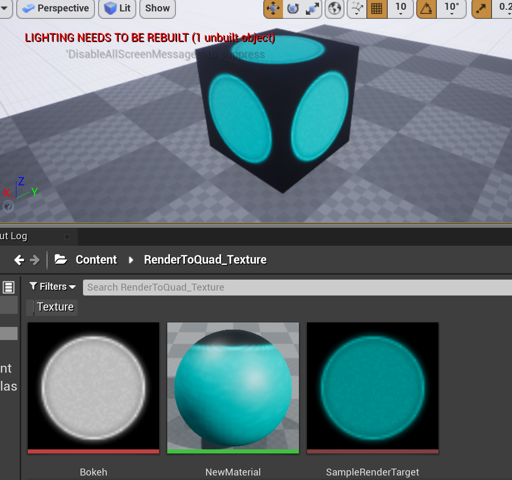

Ue4 Global Shaders - 04 Uniformbuffer
UE4版本:4.26.2
前置知识
- 图形学中的uniform buffer
- 上一篇
工程源码
测试场景: Levels/RenderToQuad_UniformBuffer
定义Uniform Buffer
UE4中的Uniform Buffer是一种储存数据的结构体，大致对应OpenGL中的 Uniform Buffer Objects，以及DirectX中的 Constant Buffer。通过它，可以向Shader传递在所有实例中均相同的数据，例如变换矩阵。 UE4中Uniform Buffer的声明采用宏的形式，例如下例中定义了一个FMyUniform结构体，其中包含三个不同类型的元素，并且将它和usf shader中的MyUniform变量(目前还没创建)关联起来。
// 一般在.h文件中
BEGIN_UNIFORM_BUFFER_STRUCT(FMyUniform, )
SHADER_PARAMETER(FLinearColor, Color1)
SHADER_PARAMETER(FVector4, Color2)
SHADER_PARAMETER(float, LerpValue)
END_UNIFORM_BUFFER_STRUCT()
// 必须在.cpp文件中
IMPLEMENT_UNIFORM_BUFFER_STRUCT(FMyUniform, "MyUniform");
传递Uniform Buffer
回顾之前几节内容,向Shader传递数值类型的属性时我们使用的是SetShaderValue，传递贴图类型属性时使用的是SetTextureParameter，现在需要传递Uniform Buffer，则需要另外一个函数 SetUniformBufferParameter 我们给SetParameters函数中增加以下内容
FMyUniform uni;
uni.Color1 = FLinearColor::Blue;
uni.Color2 = FLinearColor::Green;
uni.LerpValue = 0.5f;
TUniformBufferRef<FMyUniform> Data = TUniformBufferRef<FMyUniform>::CreateUniformBufferImmediate(uni, UniformBuffer_SingleFrame);
SetUniformBufferParameter(
RHICmdList,
RHICmdList.GetBoundPixelShader(),
GetUniformBufferParameter<FMyUniform>(),
Data);
这段代码先定义了一个FMyUniform类型的变量，并设置其中的数值。 然后使用CreateUniformBufferImmediate方法定义了一个Uniform Buffer。这里的第二个参数描述了这个uniform buffer的使用场景，它有如下一些取值：
enum EUniformBufferUsage
{
// the uniform buffer is temporary, used for a single draw call then discarded
UniformBuffer_SingleDraw = 0,
// the uniform buffer is used for multiple draw calls but only for the current frame
UniformBuffer_SingleFrame,
// the uniform buffer is used for multiple draw calls, possibly across multiple frames
UniformBuffer_MultiFrame,
};
因为我们再这里只需要使用一次绘制(在场景中我们只在BeginPlay后面调用了一次"DrawToQuad")，后面就可以丢弃了，所以使用SingleDraw或者SingleFrame。 最后使用SetUniformBufferParameter函数将Buffer传递到shader中。
注意这里简便起见，直接将Uniform Buffer的成员数值在代码中写死了，目的是把注意力集中在核心内容上。在实践中，为了能在蓝图中设置这些数值，我们也可以声明一个USTRUCT结构体，在蓝图中通过DrawToQuad函数传递给DrawToQuad_RenderThread，再通过参数形式传递给SetParameters函数，这只需要给这几个相关函数都增加一个参数即可。
usf shader中使用uniform buffer
usf shader中不需要声明，只要在开头包含Common.usf文件即可直接使用。
#include "/Engine/Private/Common.ush"
Uniform的名称即这里的"MyUniform":
IMPLEMENT_UNIFORM_BUFFER_STRUCT(FMyUniform, "MyUniform");
因此我们只需要根据自己的需要修改Pixel Shader即可
void MainPS(
in float2 UV : TEXCOORD0,
out float4 OutColor : SV_Target0
)
{
//OutColor = MainColor * MainTexture.Sample(MainTextureSampler, UV.xy);
float4 uniformColor = lerp(MyUniform.Color1, MyUniform.Color2, MyUniform.LerpValue);
OutColor = uniformColor * MainTexture.Sample(MainTextureSampler, UV.xy);
}
这里的逻辑是根据uniform中的LerpValue对Color1和Color2进行线性插值，将得到的颜色叠加到贴图上，作为Pixel Shader的最终输出。 因为我们给Uniform对象分别设置了蓝色、绿色和0.5的数值，因此预料运行后，会给贴图叠加上一层介于蓝色和绿色之间的色彩。
最终效果
